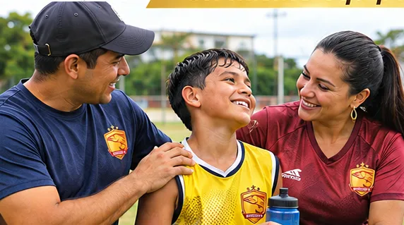

A true champion grows on and off the pitch
Every child who arrives at Barracuda F.C. brings a dream. Some want to score the winning goal in a final, others hope to represent their province, and many imagine becoming professional footballers one day.
But behind every sporting dream lies an even more important responsibility: developing honest, disciplined, respectful and supportive people. Football gives us extraordinary opportunities to learn to live together, overcome difficulties, work as a team and understand that success is not always measured in trophies.
At Barracuda F.C., we do not want to develop only good footballers. We want to help raise people who can make a positive difference in their families and communities.

Explore the 14 sections of the article
A true champion grows on and off the pitch
A team brings together children with different personalities, abilities, experiences and family circumstances. Sharing this space is one of sport’s first lessons. Players learn to wait their turn, listen to instructions, respect the rules and cooperate with teammates who may think or act differently.
Football as a school for life

Discipline is built through everyday actions: arriving on time, preparing the kit, completing schoolwork and keeping commitments. It should not be confused with fear or punishment. It requires clear rules, appropriate explanations and proportionate, respectful consequences.
Discipline: small habits, big results
Respect does not depend on results or skill level. Every player deserves dignity. Respect means listening, avoiding insults, accepting differences and understanding that mistakes are part of learning.
Respect: treat others as we wish to be treated
Winning brings joy; losing may bring frustration. Both experiences develop emotional maturity. Parents should let children express their feelings without mocking them or demanding that they hide their emotions.
Learning to win and to lose

Honesty is one of Barracuda F.C.’s fundamental values. An honest footballer respects the rules, acknowledges mistakes and does not seek an unfair advantage through deception.
Honesty and fair play
Unity does not mean everyone thinks alike. Differences need not prevent us from pursuing a shared goal. Supportive teams help their members and make everyone feel included. Inclusion means rejecting mockery and discrimination.
Unity, solidarity and inclusion: no one should feel alone
Nobody is born knowing every football skill. Dribbling, improving a pass and understanding tactics take practice, patience and guidance. Perseverance does not mean ignoring pain or exhaustion.
Perseverance: mistakes also teach us

Sharing photos without permission, spreading rumours, insulting or mocking someone contradicts respect and solidarity. Before posting, consider whether the content might hurt someone or whether consent is needed.
Values matter on social media too
Parents are role models. When an adult insults a referee or humiliates a player, the message contradicts the values we aim to teach. Supporting means listening, encouraging and recognising effort.
Parents: support without pressure
Coaches influence players’ technique, confidence and behaviour. Correcting without humiliation, listening without discrimination and setting clear rules are essential responsibilities.
Coaches: teach by example
Values become stronger when they turn into actions. These ten commitments can be read together as a family and discussed during training.
Ten commitments of a young Barracuda footballer
During a friendly match, the coach observes not only sporting performance but also respect, teamwork, honesty and solidarity.
A special activity: the values match
Each day offers an opportunity to practise a different value. Families can complete a simple weekly calendar and discuss what they have learned.
The family challenge: seven days of values
Since our founding on 29 April 2017, Barracuda F.C. has sought to contribute to the sporting and personal development of children, teenagers and young people in our community. Our institutional values—honesty, transparency, discipline, inclusion, respect, solidarity and excellence—guide our activities. We hope every player carries these lessons throughout life, even after their sporting years are over.
May every player be recognised not only for talent, but also for character.